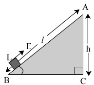
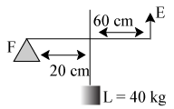
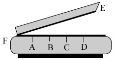
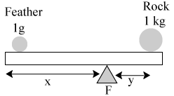
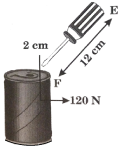

| Common Misconception |
Fact |
| A long stick is called a lever in science |
A lever is a long stick which turns about a fulcrum used to lift a load |
| A lever is not a machine |
A lever is a simple machine |
| The effort is always less than the load when we use a lever to over come a load |
The effort is less than the load provided that the efforts arm is longer than the load arm. In a third class lever, the effort is always greater than the load. |
The law of the level given below applies to the first class lever only
Effort \( \times \) efffort arm = Load \( \times \) load arm |
The law of the lever applies to all three classes of lever |
Introduction
Simple machines
A simple machine is a mechanical device that makes our work easier.
If a force is applied at one point, the simple machine transmits it to another point with a convenient change of magnitude or direction.
In our daily life, we use many machines. These are mostly made up of moving parts.
These moving parts are basically one or more of six simple machines.
Kinds of Simple machines
The six simple machines with their categories are given below.
Functions of a simple machine
A simple machine helps in performing following functions:
-
Applying force at a convenient point and in a convenient direction.
-
By applying a small effort, heavy loads can be lifted i.e., acts as force multipliers.
-
To speed up the motion of a body i.e., acts as speed multipliers.
General terms used
Load (L)
A resistive force to be overcome by a machine. Measured in newton (N)
Effort (E)
An external force applied to a simple machine to overcome the load. Measured in newton (N)
Mechanical Advantage (M.A)
The ratio of load overcome to the magnitude of the effort. It does not have units as it is a mere number.
It is also called leverage.
\( Mechanical \ Advantage \ (MA) = \frac{Load (L)}{Effort (E)} = \frac{Effort \ arm \ (EA)}{Load \ arm \ (LA)} \)
Velocity ratio (VR)
The ratio of distance traversed by the effort to the distance traversed by the load in a same given time.
\( Velocity \ ratio \ (VR) = \frac{Velocity \ of \ the \ effort}{Velocity \ of \ the \ load} \)
Work input
The energy supplied to a machine is called work input. If an effort E, causes a displacement S in its own direction, then
Work input = Effort \( \times \) displacement
= \( E \times s \)
Work output
The useful workdone by the machine is called work output. If l is the useful load displaced through a distance d, then
Work output = l \( \times \) d
Efficiency \( ( \eta) \)
The ratio between the useful output to the actual input of the machine is called efficiency \( ( \eta) \)
\( \eta = \frac{output}{input} \)
Relation between efficiency, mechanical advantage and the velocity ratio
\( \begin{align} \eta = \frac{ouput}{input} = \frac{l \times d}{E \times s} \\\\[3pt]
= \frac{l}{E} \div \frac{s}{d} = M.A \div VR \\\\[3pt]
\therefore \eta = \frac{M.A}{VR} \end{align} \)
Inclined Plane
A smooth, rigid flat surface, inclined at an angle to the horizontal plane is an inclined plane.
Examples
-
A flat plank used for rolling
-
A gangway to a sailing ship
\( MA = \frac{Length \ of \ inclined \ plane}{height \ of \ plane} \)

Mechanical advantage depends on the slope (i.e. angle of inclination) of an inclined plane. As the slope of inclined plane increases gradually then more effort is required to push the load up. Hence, mechanical advantage decreases.
Solved examples
Example 1:
A machine is able to lift a-load of 100 N. If the machine offers a resistance of 20 N due to friction and movable parts through a displacement at 2 m.
-
then find the total lifted.
-
find the work output of the machine.
Solution:
-
The total lifted = (100 + 20)N = 120 N
-
Work output of the machine = Force \( \times \) displacement = 100 N \( \times \) 2 m = 200 J
Example 2:
Identify the class of lever as shown in the figure. Calculate effort and mechanical advantage.

Solution:
Class II lever (since load is in between effort and fulcrum)
Principle of lever
Load \( \times \) load arm = effort \( \times \) effort arm
\( 40 \times 0.2 = E \times (0.6 + 0.2) \)
\( E = \frac{8}{0.8} = 10 \ kg \)
\( MA = \frac{load}{effort} = \frac{40}{10} = 4 \)
Example 3:
The velocity ratio of a machine is 4. If this machine is used to lift a load of 800 N by 2 in using an effort of 60 kg f then find efficiency of the machine.
Solution:
Velocity ratio (VR) = 4; load = 800 N
Effort = 60 kgf = 60 \( \times \) 10 = 600 N
\( MA = \frac{load}{effort} = \frac{800}{600} = \frac{4}{3} \)
\( \therefore Efficiency ( \eta) = \frac{MA \times 100}{VR} \)
\( \frac{4 \times 100}{3 \times 4} = \frac{100}{3} \% \ or \ 33.3 \% \)
Example 4:
Figure below shows a paper cutter. At which position A, B, C or D should a thin stick be placed so that a least force is applied to cut it?

Solution:
The paper cutter is a second order lever. The position A, B, C and D given gives the position of load. For greater mechanical advantage load arm i.e. distance between F and the positions A, B, C or D must be small at position A, load arm is least and hence a least force is needed to cut the stick.
Example 5:
A vegetable cutter has an handle of 15 cm. A house wive uses it to cut a potato by placing it 5 cm from the fulcrum. If she applies an effort of 25 N then find the resistance offered by the potato.
Solution:
Given, effort arm (EA) = 15 cm
Load arm (LA) = 5 cm
and Load (L) = ?
We know, \( MA = \frac{L}{E} = \frac{EA}{LA} \)
\( \frac{L}{25} = \frac{15}{5} \Rightarrow L = 75 N \)
Example 6:
In a frist order lever a 1 g feather was balanced by a 1 kg rock. Find the ratio of distance of feather from the fulcrum to that of distance of feather from the rock
Solution:

Principle of lever,
Load \( \times \) Load arm = Effort \( \times \) Effort arm
\( \begin{align} \Rightarrow 1 \times x = 100 \times y \\\\[3pt] \frac{x}{y} = \frac{1000}{1} \ or \ \Rightarrow \frac{y}{x} = \frac{1}{1000} \\\\[3pt]
\frac{ \text{Distance of feather from fulcrum}}{ \text{Distance of feather from rock}} = \frac{x}{x + y} \\\\[3pt]
\Rightarrow \frac{1}{1 + \frac{y}{x}} = \frac{1}{1 + \frac{1}{1000}} = \frac{1000}{1001} \end{align} \)
Example 7:
In the figure shows below, find the effort required to open the tin ? Which order lever is it ?

Solution:
Given, effort arm (EA) = 12 cm
Load arm (LA) = 2 cm
and Load (L) = ?
We know, MA = \( \frac{L}{E} = \frac{EA}{LA} \)
\( \frac{120}{E} = \frac{12}{2} \Rightarrow E = 20 N \)